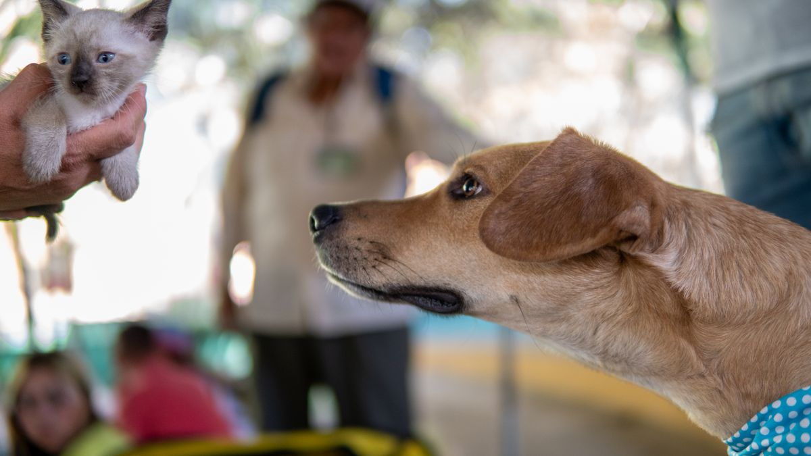

첫 주가 중요한 이유
새 집의 바닥재 냄새, 가족 목소리, 밖에서 들리는 소음까지 모두 낯선 자극입니다. 입양 첫 주에 해야 할 일은 완벽한 앉아·기다려 훈련이 아니라 안정적인 환경을 만드는 것에 가깝습니다.

블로그와 유튜브에서 본 정보를 하루 만에 전부 적용하려다 급여 시간이 4번 바뀌고, 배변 패드 위치가 3곳 옮겨지는 경우를 자주 봅니다. 첫 주에는 변화를 최소화하고, 먹이·휴식·배변 패턴을 7일간 관찰하는 데 집중하는 편이 낫습니다.
세 가지 기준: 관찰, 휴식, 루틴
관찰은 아침·점심·저녁 각 5분, 총 하루 15분이면 충분합니다. 식욕(그릇에 남은 양 g 단위), 배변 횟수(보통 하루 2~3회), 수면 자세, 눈곱 정도를 스마트폰 메모장에 적어 두세요.
휴식은 새 가족에게 필수입니다. 입양 후 3일간은 방문객을 0명으로 두고, 사진 촬영·인스타 라이브도 잠시 미루세요. 조용한 구석에 60×45cm 매트 하나만 깔아도 휴식 공간이 됩니다.
루틴은 오전 7시·오후 6시 급여처럼 시각을 맞추기보다, 기상→급여→15분 산책→휴식 순서가 매일 반복되는 것이 더 중요합니다.
실제로 도움이 되는 실천 팁
첫 5일은 장난감 1개, 간식 1종, 사료 브랜드까지 동시에 바꾸지 않습니다. 배변 패드는 최소 1주일 같은 자리에 두고, 화장실(고양이)은 위치 이동을 3일에 30cm씩만 옮깁니다.

- 가족 3명이 돌본다면 급여·산책·청소 담당을 화이트보드에 적어 두세요
- 동물병원 예약은 입양 10일 후로 잡고, 그 전에는 관찰만 합니다
- 이동장·하네스는 집 안에서 하루 3회, 2분씩 긍정 체험을 쌓습니다
- 밤중 울음·하울링은 3일 넘어 지속되면 메모와 함께 상담 일정을 검토합니다
첫 주 하루 흐름 예시
아침: 기상 후 10분 휴식 → 급여(권장량의 80%부터 시작) → 배변 패드 확인 → 짧은 실내 활동 5분.

낮: 출근 가정은 조용한 공간에 물그릇·휴식 매트만 확보. 재택 가정은 2시간마다 1분씩 눈·코·귀 상태만 확인합니다.
저녁: 15분 산책 또는 실내 놀이 → 발 닦기 2분 → 저녁 급여 → 20분 조용한 시간 후 취침 준비.
실전 적용 노트
입양 첫 주에는 '잘하고 있는가'보다 '오늘도 같은 순서로 했는가'가 더 현실적인 질문입니다. 급여 시간이 30분만 밀려도 배변·수면·호흡 패턴이 함께 흔들리는 경우가 많아, 첫 7일은 변화를 최소화하는 쪽이 안전합니다.
관찰 메모는 병원에 가져갈 때도 도움이 됩니다. 식욕(그릇에 남은 양), 배변 횟수, 수면 자세, 눈곱 정도를 하루 3회 각 5분만 적어도 '오늘만 이상한지'와 '패턴이 바뀐 것인지'를 구분하기 쉬워집니다.
가족이 함께 돌본다면 담당을 나누되, 첫 주에는 한 사람이 메모를 통합하는 편이 좋습니다. 각자 다른 방식으로 기록하면 오히려 혼란이 커질 수 있습니다.
산책·방문·새 장난감은 3일째 반응을 본 뒤 하나씩 추가하세요. 입양 당일 친구 방문과 새 사료 전환을 동시에 하면, 다음 날 식욕 저하만 보고 입양 적응 실패로 오해하는 경우가 있습니다.
밤중 울음·하울링은 3일 넘어 지속되면 메모와 함께 상담 일정을 검토하세요. 첫 주의 목표는 완벽한 조용함이 아니라, 예측 가능한 하루를 만드는 것에 가깝습니다.
휴식 공간은 화려할 필요 없습니다. 60×45cm 매트와 물그릇이 같은 자리에 5일 이상 유지되면, 많은 개체에게 충분한 출발점이 됩니다.
아침 루틴은 급여 전 2분 관찰, 급여, 10분 휴식, 짧은 배변 확인 순으로 고정해 보세요. 저녁도 같은 순서를 유지하면 밤 행동 예측이 쉬워집니다.
사료는 첫 주에 브랜드를 바꾸지 않는 편이 안전합니다. 꼭 바꿔야 한다면 7일 이상 서서히 섞는 방식을 쓰고, 변·구토가 늘면 속도를 더 늦추세요.
첫 검진은 입양 3~7일 사이를 많이 잡습니다. 그 전까지의 메모가 있으면 '언제부터인지' 설명이 명확해집니다.
첫 주 보충 체크리스트입니다. 이미 2000자를 넘겼다면 참고용으로만 보셔도 됩니다.
- 아침·저녁 같은 순서(관찰→급여→휴식)를 유지했습니다.
- 사료 브랜드 전환은 7일 이상 서서히 진행했습니다.
- 첫 검진 일정을 3~7일 사이에 잡았습니다.
실전 노트는 하루에 전부 적용하기보다, 체크리스트 3개만 골라 2주 반복하는 방식이 오래 갑니다. 잘 되는 항목만 남기고 나머지는 과감히 빼도 괜찮습니다.
마무리로, 이번 주에는 체크리스트 3개만 골라 2주 반복해 보세요. 작은 성공이 쌓이면 나머지는 자연스럽게 늘어납니다.
정리하며
첫 주 글을 쓸 때마다 가장 많이 받는 질문이 산책 시작 시점인데, 제가 본 사례 중 적응이 빠른 아이는 3일째 10분, 더딘 아이는 10일째 실내 복도만 걸었습니다. 숫자보다 눈빛과 식욕이 먼저입니다.
저는 입양 직후 일주일을 '점수 매기는 기간'이 아니라 '기준선 잡는 기간'으로 봅니다. 완벽한 하루가 없어도 괜찮고, 같은 실수를 반복하지 않는 것만으로도 충분히 앞으로 나아가고 있습니다.
오늘 밤 한 가지만 정해 보세요. 급여 시간, 휴식 매트 위치, 관찰 메모 중 하나면 충분합니다.
초보자가 자주 실수하는 포인트
- 입양 직후 사료·간식·장난감 3가지 이상 동시 교체
- 첫 3일 안에 지인 5명 이상 초대
- 배변 패드를 하루 만에 2곳 이상 옮김
- 유튜브 훈련법을 검증 없이 즉시 적용
- 급여량을 포장지 100%부터 시작해 구토 유발
체크리스트
- 급여·휴식·외출 시간 기본 순서 정하기
- 관찰 메모 항목 5개 정하기
- 가족 역할 분담표 냉장고에 붙이기
- 60×45cm 조용한 휴식 매트 확보
- 응급 동물병원·24시간 연락처 저장
자주 묻는 질문
- 첫 주에 산책을 바로 시작해야 하나요?
- 적응이 빠르면 3일째부터 아파트 단지 안 10분, 더딘 경우 7~10일 후 실내 복도 5분부터 시작합니다.
- 메모는 꼭 해야 하나요?
- 7일간 배변 횟수·남긴 사료량·수면 시간을 적어 두면 2주 차 루틴 조정이 훨씬 수월해집니다.
이 글은 초보자 기준으로 이해하기 쉽게 정리되었으며, 내용은 운영 과정에서 순차적으로 보완될 수 있습니다. 수의사 등 전문가의 진단·처치를 대체하지 않습니다.